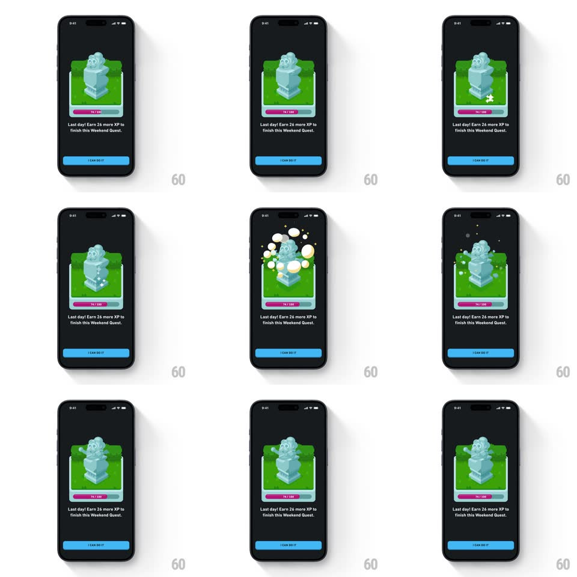

Media
Frame-by-frame

Rebuild this animation 1:1: Duolingo's Weekend Quest card - the stone Duo sculpture spring-bounces on its pedestal while star sparks and bubble particles burst around it.

Rebuild this animation 1:1: Duolingo's Weekend Quest card - the stone Duo sculpture spring-bounces on its pedestal while star sparks and bubble particles burst around it.
## Integration
Integration: stack-agnostic spec - springs given as stiffness/damping, timed motions as duration + curve; map every value to your framework and animation library of choice.
## Scene
A dark screen with a single quest card: a green-framed scene holding a light-blue stone Duo sculpture on a pedestal, a pink progress bar ("18/350") across the card's bottom edge, the copy "Last day! Earn 26 more XP to finish this Weekend Quest.", and a blue "I CAN DO IT" button.
## Motion spec
Pattern: spring-loaded sculpture bounce with a star and bubble particle burst.
- On appearance the card fades up (12px rise, 300ms) and the sculpture immediately does a squash-and-stretch bounce: squash (scaleY 1 -> 0.85, 120ms), then spring launch (scale 0.85 -> 1.1 -> 1, spring ~380/11, ~500ms) with a 20px hop off the pedestal and back.
- At the bounce apex, particles burst: 6-8 white/green bubbles and 4-point star sparks radiate outward (~80px) with slight rotation, fading over 600ms with 30ms stagger.
- The sculpture settles with two small wobbles (rotate +/-3deg, spring decay) and then idles with a gentle breathing bob (3px, 2.4s loop).
- A sparkle glints off the sculpture's head every ~3s (small star flare, scale 0 -> 1 -> 0, 300ms).
- The progress bar and copy stay still - all life is in the sculpture scene.
## Calibration
- The bounce has real squash - no rigid translation hops.
- Particles stay inside the card's green frame (masked); they never spill over the copy.
## Reduced motion
The sculpture fades in with one small rise (8px, 200ms); no particles.
## Don't miss
- The pink progress bar sits exactly on the card's bottom border - part of the frame, not a separate bar.
- The sculpture is matte stone-blue with simple carved features - it reads as a statue, not the live mascot.